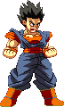
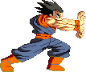

activate Unleashed Mode (LV2)
Activating Unleashed Mode has Gohan unlocking his full potential. This changes a few things, gameplay-wise.
- At activation, you will see an empty Unleashed Bar (which is devided into 3 sections representing Lv1, Lv2 and Lv3) and a red kanji added to the screen.
- Gohan's Power Charge now charges both his Power Bar and (slowly) his Unleashed Bar.
- Hitting the opponent with Omni Kicks and both Hurricane Kicks attacks gradually fills the Unleashed Bar.
- His Masenko becomes the chargeble projectile version.
- He gains diagonal directions to his airdashing.
- Gekiretsu Ranbu costs Lv2 instead of Lv3 and takes you out of the mode upon activation. It also gets a unique Finisher depending on the Unleashed Bar level.
- At activation, you will see an empty Unleashed Bar (which is devided into 3 sections representing Lv1, Lv2 and Lv3) and a red kanji added to the screen.
- Gohan's Power Charge now charges both his Power Bar and (slowly) his Unleashed Bar.
- Hitting the opponent with Omni Kicks and both Hurricane Kicks attacks gradually fills the Unleashed Bar.
- His Masenko becomes the chargeble projectile version.
- He gains diagonal directions to his airdashing.
- Gekiretsu Ranbu costs Lv2 instead of Lv3 and takes you out of the mode upon activation. It also gets a unique Finisher depending on the Unleashed Bar level.

Family Kamehameha
Gohan's exit from Unleashed Mode sees him performing the famous Kamehameha. The intensity is determined at how far your Unleashed Bar is filled:
-At LV0, Gohan fires a Kamehameha projectile comparable to Goku's LV1 version.
-At LV1, Gohan fires a Kamehameha beam comparable to Goku's uncharged LV2 version.
-At LV3, Gohan is assisted by Goten and the both of them fire a meaty beam.
-At LV3, Gohan is assisted by both Goten and Goku and the three of them fire a massive, sky-shattering combined beam.
All versions have two variants: Long-range (a blast/beam being fired truly, in-game) and a close-range version (Gohan first kicks the opponent against the wall, then teleports back and prepares his attack, this is a more cinematic variant, especially in the case of the LV3).
-At LV0, Gohan fires a Kamehameha projectile comparable to Goku's LV1 version.
-At LV1, Gohan fires a Kamehameha beam comparable to Goku's uncharged LV2 version.
-At LV3, Gohan is assisted by Goten and the both of them fire a meaty beam.
-At LV3, Gohan is assisted by both Goten and Goku and the three of them fire a massive, sky-shattering combined beam.
All versions have two variants: Long-range (a blast/beam being fired truly, in-game) and a close-range version (Gohan first kicks the opponent against the wall, then teleports back and prepares his attack, this is a more cinematic variant, especially in the case of the LV3).